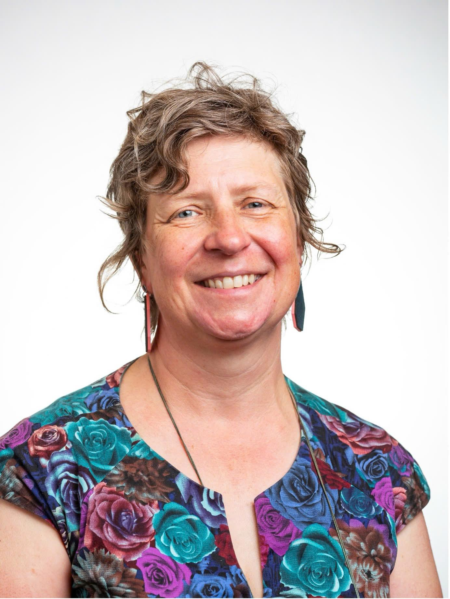

Featured Keynote Speakers

Prof. Rosemary Hunter
Loughborough University, UK
A pioneer and leading global voice in the Feminist Judgments movement.

Prof. Aoife O'Donoghue
Queen's University Belfast, UK
Expert in feminist constitutionalism and international law.

A/Prof. Becky Batagol
Monash University, Australia
Lead editor of the Feminist Legislation Project.